Les jeux Ankama
Présentation des jeux
MMORPG
Dofus
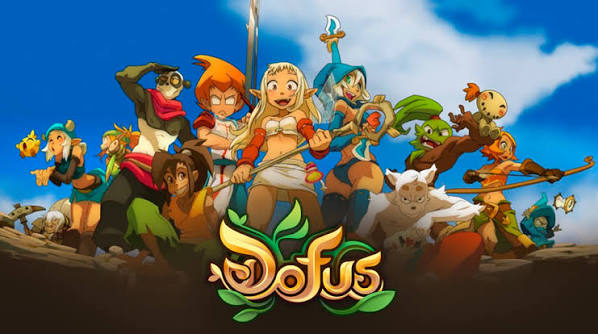
DOFUS est un MMORPG français développé par Ankama, sorti le 1er septembre 2004. Le jeu se déroule dans un univers fantastique appelé le Monde des Douze, où les joueurs explorent, combattent des monstres et accomplissent des quêtes. Le but principal est de retrouver les précieux œufs de dragon appelés les Dofus. Grâce à ses combats tactiques au tour par tour, ses nombreuses classes et son univers riche, DOFUS est devenu un jeu emblématique du jeu vidéo français
Dofus RETRO
DOFUS Retro est une version du MMORPG français DOFUS, développée par Ankama et lancée le 24 septembre 2019. Elle permet aux joueurs de retrouver l'ancienne version du jeu, avec ses graphismes en 2D, son gameplay classique et ses combats tactiques au tour par tour. Le but est d'explorer le Monde des Douze, de combattre des monstres, de réaliser des quêtes et de retrouver les précieux œufs de dragon appelés les Dofus. Cette version séduit notamment les joueurs nostalgiques qui souhaitent retrouver l'expérience originale du jeu.
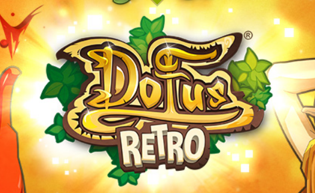
Dofus Touch
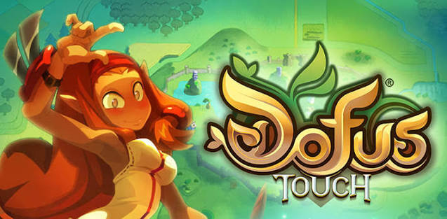
DOFUS Touch est un MMORPG développé par Ankama, sorti en 2016 sur smartphones et tablettes. Cette version reprend les bases de DOFUS tout en proposant une expérience pensée pour le mobile. Elle possède ses propres serveurs, son économie et une progression adaptée, permettant aux joueurs de vivre leurs aventures où qu’ils soient. Entre PvP, donjons, métiers et commerce, DOFUS Touch offre une expérience complète aux amateurs de jeux en ligne.
Wakfu
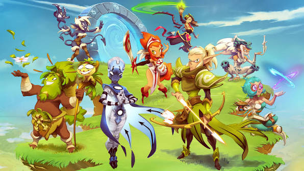
WAKFU est un MMORPG développé par Ankama, sorti officiellement le 29 février 2012. L’histoire se déroule dans le Monde des Douze, plusieurs siècles après l’âge de DOFUS, dans un monde transformé par un immense cataclysme. Le jeu se distingue par son système d’écosystème, où les joueurs peuvent influencer la nature et les ressources, ainsi que par un système politique permettant d’élire des gouverneurs. Entre exploration, combats tactiques et gestion du monde, WAKFU propose une expérience qui laisse une place importante aux choix des joueurs.
Waven
WAVEN est un jeu de rôle tactique développé par Ankama, sorti en accès anticipé en août 2023. Situé dans l’univers du Krosmoz, l'univers ou se trouve le monde des douzes, il propose une aventure centrée sur des combats stratégiques où le choix des sorts, des équipements et des compagnons joue un rôle essentiel. Avec son style graphique coloré en 3D et son système de progression personnalisable, WAVEN renouvelle l’expérience des jeux Ankama tout en étant accessible sur PC et appareils mobiles.
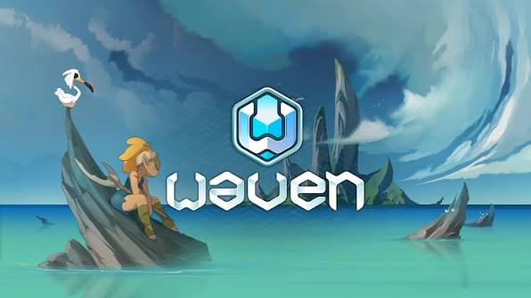
Univers de ANKAMA
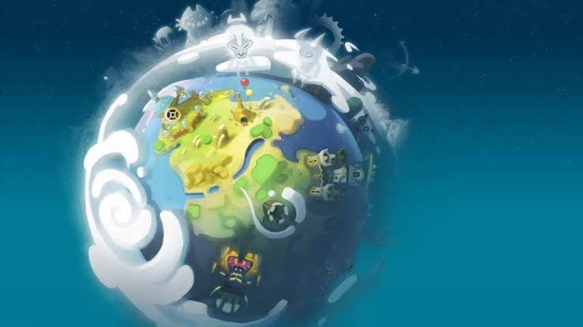
L’univers du Krosmoz est un monde fantastique créé par Ankama, qui rassemble plusieurs jeux comme DOFUS, DOFUS Retro, DOFUS Touch, WAKFU et WAVEN. Rempli de magie, de créatures fantastiques, de divinités et de légendes, il se distingue par la richesse de son histoire et la diversité de ses mondes. Chaque jeu possède également sa propre identité artistique : DOFUS et DOFUS Retro se démarquent par leur univers coloré et leur style dessiné en 2D, WAKFU propose une direction artistique inspirée du dessin animé, tandis que WAVEN adopte un style en 3D aux formes stylisées et aux couleurs vives. Cette diversité visuelle, accompagnée d'un humour décalé et de personnages attachants, donne au Krosmoz une identité unique, reconnaissable à travers les jeux, les séries animées et les films d'Ankama.
Autres productions consoles
Savara
SAVARA est un jeu d’action de type roguelite développé par Doryah Games et édité par Ankama Games, sorti le 6 mai 2025 sur PC. Le joueur incarne Savara, une guerrière choisie comme championne du dieu Iop, et doit affronter des créatures redoutables lors de combats exigeants. Le jeu mise sur la maîtrise des armes, l’esquive et le bon timing pour vaincre ses adversaires. Son univers fantastique, inspiré de l’esthétique colorée d’Ankama, se distingue par une ambiance mythologique centrée sur les défis guerriers et la quête de gloire.
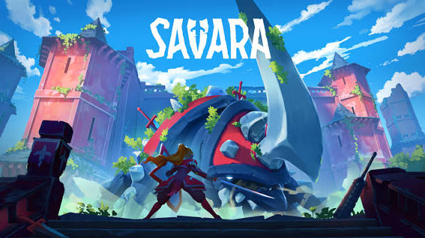
Maliki : Poison of the past
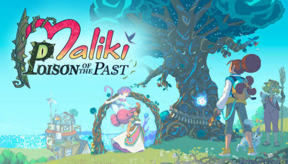
Maliki : Poison of the Past est un jeu d’aventure développé par Blue Banshee et édité par Ankama, sorti le 22 mai 2025. Inspiré de la bande dessinée *Maliki*, il suit les aventures de Maliki et de ses compagnons dans une quête à travers le temps pour empêcher une menace de détruire leur monde. Le jeu mélange exploration, énigmes et combats au tour par tour, avec une mécanique permettant de manipuler le temps. Son univers artistique reprend le style manga coloré de la bande dessinée, avec des personnages expressifs, des décors dessinés à la main et une atmosphère mêlant humour, fantastique et science-fiction.
One More Gate : A Wakfu Legend
One More Gate: A Wakfu Legend est un jeu de deck-building roguelite développé par Ankama, qui se déroule dans l’univers de WAKFU. Le joueur incarne Oropo et traverse des portails mystérieux pour explorer des lieux dangereux et affronter des ennemis. Les combats reposent sur la création d’un deck de sorts et de cartes à combiner stratégiquement pour créer de puissantes attaques. Le jeu reprend le style graphique coloré et l’humour caractéristiques du Krosmoz, avec des environnements dessinés en 2D et des personnages hauts en couleur. Le jeu est sorti le 12 septembre 2023 sur PC, après une période d’accès anticipé, puis le 21 mai 2024 sur Nintendo Switch.
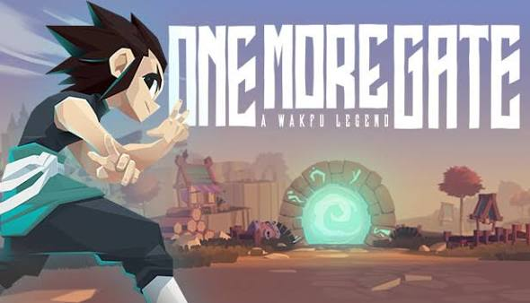
Krosfighter
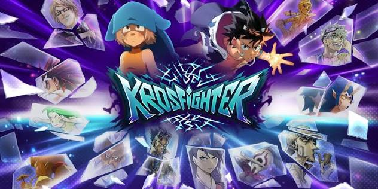
Krosfighter est un party shooter développé par Doryah Games en collaboration avec Ankama Games, sorti le 13 mars 2024. Le jeu réunit des personnages issus du Krosmoz et d’autres univers d’Ankama dans des combats frénétiques où le but est d’être le dernier survivant. Jouable jusqu’à quatre joueurs, en local ou en ligne, il propose différents héros aux styles de combat uniques, ainsi que des interventions imprévisibles des dieux qui peuvent bouleverser les affrontements. Son style graphique coloré et inspiré de la bande dessinée accompagne une expérience multijoueur dynamique, chaotique et pleine d’humour.
Super Nano Blaster
Super Nano Blaster est un shoot’em up développé par la 3.5 Inch Team et édité par Ankama Games, sorti sur PC et Mac en 2021. Le joueur pilote un vaisseau dans un univers numérique rétro contaminé par un virus appelé The Void, qu’il doit combattre pour remonter jusqu’à la source de l’infection. Le jeu propose des combats intenses, huit vaisseaux à maîtriser et une mécanique originale permettant de basculer entre deux dimensions pour éviter les obstacles et surprendre les ennemis. Jouable en solo ou en coopération locale, il se distingue par son esthétique pixel art, son ambiance futuriste et son rythme arcade exigeant.
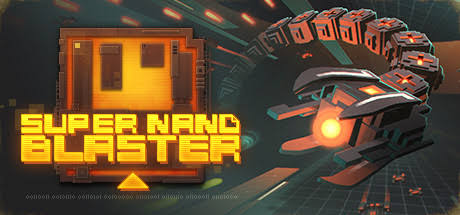
Krosmaga
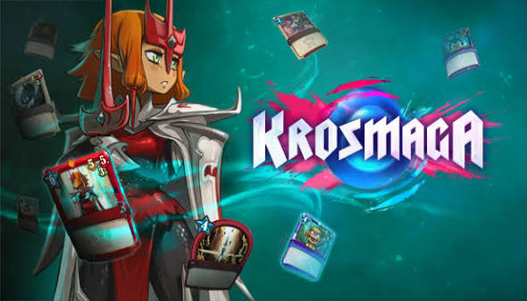
Krosmaga est un jeu de cartes stratégique développé par Ankama, qui mélange les mécaniques du jeu de cartes à collectionner et du tower defense. Dans l’univers du Krosmoz, les joueurs incarnent des dieux et construisent leurs decks à partir de cartes représentant des personnages, des créatures et des sorts issus des univers DOFUS et WAKFU. Les affrontements se déroulent sur un plateau composé de plusieurs lignes, où il faut déployer ses unités et avancer tactiquement pour détruire les Dofus adverses tout en protégeant les siens. Le jeu se distingue par son style graphique coloré, son humour et la diversité de ses stratégies. Sorti le 12 avril 2017 sur PC, Krosmaga propose également des aventures en solo